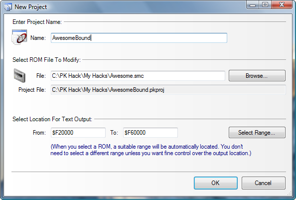
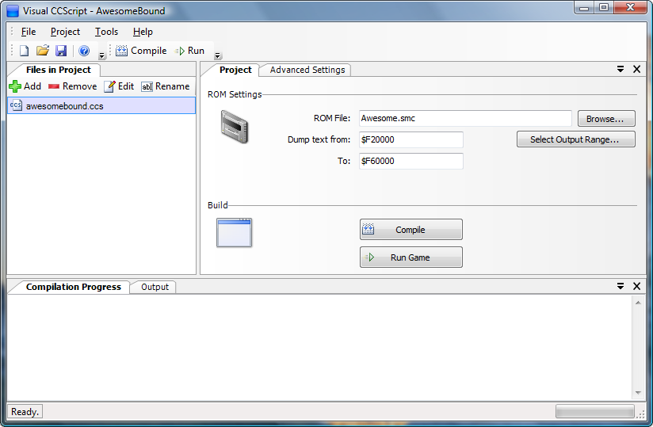
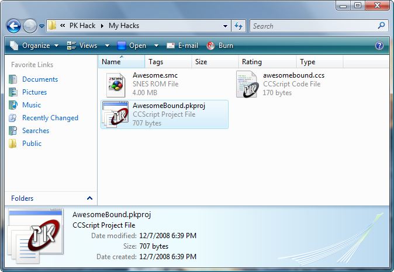
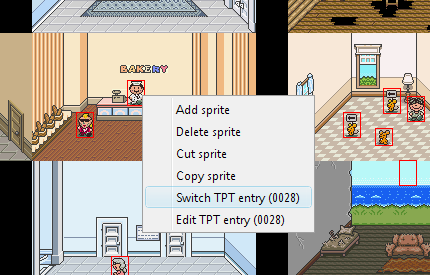
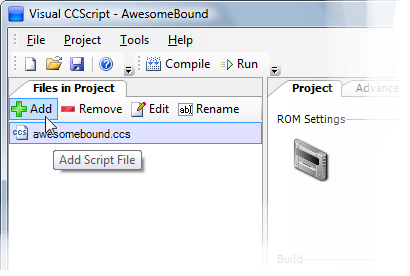

CCScript Tutorial
Getting started using CCScript is quick and easy. First, you'll need to download the CCScript
project editor, Visual CCScript. Unzip it
somewhere convenient, open the folder, and run Visual CCS.exe. The first time you run it,
you'll see a window that looks like this:

Figure 1. The Visual CCScript setup screen.
Visual CCScript doesn't have a built-in text editor (yet), so for now you need to specify a
text editor you would like to use to edit script files. Visual CCS comes with a syntax highlighting
definition for Helios TextPad, so it's recommended that you
use TextPad. If you don't already have TextPad, click the "Download TextPad" button in the Visual
CCS setup window, and it will take you to TextPad's download page.
If you prefer to use a different text editor, just click the lower button. An options window
will appear, allowing you to choose a different program to use to edit script files. You won't
get automatic syntax highlighting with other editors, though, so unless you want to create your
own syntax highlighting definitions for your preferred text editor, we recommend that you just download
TextPad!
After setting up Visual CCScript with a text editor, the main window of Visual CCScript will appear.
To get started, first select "New Project" from the "File" menu. The "New Project" window will
then appear:

Figure 1. Creating a new project in Visual CCScript.
Here you need to choose two things: the name of your project, and the ROM file you want to edit.
Visual CCScript will automatically find a good place to dump compiled scripts into the ROM you select,
so in most cases you don't have to do anything to the "Select Location For Text Output" fields.
Once you've made your selections, hit "OK." A file for your project will be created in the same
directory as the ROM. Now the main screen of Visual CCScript should look like this:

Figure 2. The main Visual CCScript window.
The panel on the left side of the window lists all the script files that are part of your project.
When you first create a project, Visual CCScript also creates one script file, with the same name
as your project. Double-click the name of the file (or select it in the list by clicking once,
and then click the "Edit" button in the toolbar) to open it in a text editor.
Go ahead and open the generated CCS file. It should look something like this:
This text is just a comment that Visual CCScript automatically adds to the files it creates.
In a CCScript file, any text between "/*" and "*/" is a comment - it doesn't do anything,
(the compiler completely ignores it)
but it's useful to be able to write descriptive notes to yourself or to others. This particular
note isn't important or anything; you can delete it if you want.
So, that's all you need to do to set up a CCScript project!
When you want to return to an existing project at a later time, you can either start up CCScript again
and find your project file through the "File->Open" menu, or you can just go back to the folder that
contains your ROM file, and look for your project file there. It might look like this:

Figure 3. CCScript project file.
Just double-click your project file in Windows Explorer, and it will be opened in Visual CCScript
automatically, so you can jump right back into hacking!
Once you have a project set up, clicking the "Compile" button will immediately compile all your script
files into EB text and control codes, and dump the result into your selected ROM. It's that easy!
As your project is compiling, messages will appear in the bottom of the Visual CCScript window.
If all goes well, the last line will read "===== Compilation Succeeded! =====" --
that means that your script has been successfully dumped into the ROM.
However, if there are any errors in your script, they will be listed, including the file and the line
number associated with each error. When there are errors, nothing gets written out: your ROM will
remain unchanged. You'll need to open up the files that contain the errors and correct them.
Generally speaking, the error message displayed in the bottom panel will explain what you did wrong.
Assuming everything works and compilation succeeds, you can then click the "Run Game" button to
begin playing your hack immediately! (Note: if you don't already have .SMC files set up in Windows
to automatically open in your preferred emulator, you'll need to go to Tools->Options and tell CCScript
what emulator you would like to use before this button will work.)
Caution! Be careful if you have your ROM open in JHack while also compiling text with CCScript.
If you open your ROM in JHack and then compile your project, your compiled text will be reverted
if you then "Save" your ROM in JHack.
You won't lose anything, because all your hard work is stored in your *.ccs files and not in the ROM,
but you will have to compile your project again in order to see your changes!
So, for best results, always compile your project after saving in JHack.
So, now that we've covered setting up and compiling a project, you're probably wondering how
to use CCScript to actually put stuff into a ROM. Read on to the next section and we'll get started!
So, how do you put text into your hack with ccscript? Easy: just enclose it in
quotation marks ("") and put it into a script file, like so:
"@Hello; I don't believe we've met before.[13 02]"
"@This bakery is kind of a lame place for a cool guy like me.[13 02]"
"@Pies are delicious.[03 00]"
"@Would you like to buy a pie?[13 02]"
The code above will write those four strings into the ROM, one after another. Note that
[02] codes are still needed to separate them - the "Pies are delicious" string does
not use [02] - instead it would just display a prompt and then continue to the next
line, "Would you like to buy a pie?" Pretty neat, huh? However, just a handful of text strings aren't
very useful. We need to be able to refer to the text somehow, so sprites and other text blocks
can link to it, right?
In the old text system, we did this with pointers. For example, we'd have a text block
in the expanded area of the text editor, with an address like $F021CB, and to reference it
in another text block, we'd have to flip all the bytes around and use a control code like
[08 CB 21 F0 00]. And we'd have to do that every time we wanted to link
text together. The more text we added to the ROM, the more painful it was to manage all the
addresses, especially if you had links into the middle of text blocks where the address might
change when you edit the text.
Fortunately, CCScript makes all this easy. Instead of pointers, we use labels. A
label allows you to give a "name" to a point within your text. You can then use that name to
refer to that location, instead of worrying about the exact address.
To create a label, all you have to do is write a name followed by a colon (:). Label names
are allowed to contain letters, numbers, and underscores. (Also, a label name can't begin with a
number.) Here's an example of using labels:
introduction:
"@Hello; I don't believe we've met before.[13 02]"
frank:
"@This bakery is kind of a lame place for a cool guy like me.[13 02]"
pie:
"@Pies are delicious.[03 00]"
"@Would you like to buy a pie?[13 02]"
Now we've created three labels in our text. Labels can be created just about anywhere, and
there's no need to create a label for every string. The line breaks and indentation are optional,
but they make things easier to read, so it's a good idea to use them. :-)
So, now that we have some labels, how do we actually use them? We'll find out in the next
section!
In CCScript, commands are basically an easier way to use control codes. Instead of
using a sequence of code bytes like [1F 23 42 00], you can use a simple, easy-to-remember
command like battle(0x42).
If a command takes parameters, you put them after the command
name and inside parentheses. (In the last example, 0x42 is a parameter. In this case,
it's how you specify which battle entry should be used.)
If a command takes more than one parameter, you separate them with commas.
If a command doesn't take any parameters, you don't need any parentheses.
A few built-in commands
There are a lot of commands we can use -- EB has a lot of control codes, after all. There is a full
list of built-in commands in the Library documentation, but for convenience,
here is a list of a few of the most commonly used commands:
next - shows a blinking prompt, then a linebreak. Equivalent to [03 00]end - waits for input and ends text parsing; equivalent to [13 02]set(flag) - sets an event flagunset(flag) - clears an event flagcall(label) - jumps to the specified label and returns when done parsinggoto(label) - jumps to the specified label and does not returngive(char, item) - puts item into char's inventory.name(char) - displays the name of the given charactersound(num) - plays a sound effect
Note the goto and call
commands - these are one way we can make use of
the text labels we created in the previous section. Suppose we wanted the first text block to
include a link to the last one? (Perhaps the person saying "Hello" is the baker.) All we have to
do is use a goto command, like so:
introduction:
"@Hello; I don't believe we've met before." next
goto(pie)
frank:
"@This bakery is kind of a lame place for a cool guy like me."
end
pie:
"@Pies are delicious." next
"@Would you like to buy a pie?"
end
Note that we also replaced [13 02] and [03 00] with their equivalent commands.
Looks much neater now, doesn't it?
Embedding commands inside strings
You can also embed commands directly into text strings by surrounding them with curly braces, like this:
"@({name(1)} got the {itemname(42)}.)"
You can get the same result by doing something like this:
"@(" name(1) " got the " itemname(42) ".)"
Both forms give the same results, but in some cases using the curly braces will be tidier. It's
purely a matter of style which one you choose, and you can mix and match the different formats as well.
So, now we have a few text strings that will be compiled into the ROM. We know how to link text
blocks together, but that's not very useful by itself. How can we make sprites in the game actually
use the text we create?
In CCScript, all we have to do is use the sprite_link
command, which will wire up a given TPT entry in the ROM to a label in our script. To use
sprite_link, all we need to know is the TPT number
we want to use. This is easy enough to find in PK Hack's map editor:
just right-click the sprite, and its TPT number will be listed in hexadecimal on the popup menu.

Figure 1. Right-click a sprite in the map editor to find its TPT number
In Figure 1, we can see that the baker's sprite is TPT entry number 0x28. So, if we wanted to
make it so that the baker uses the text that we've labeled "some_text", all we have to do is add
the command sprite_link(0x28, introduction)
to our script! The TPT number for Frank's sprite is 0x92, so we can link both of these sprites
to the appropriate text like so:
sprite_link(0x28, introduction)
sprite_link(0x92, frank)
introduction:
"@Hello; I don't believe we've met before." next
goto(pie)
frank:
"@This bakery is kind of a lame place for a cool guy like me."
end
pie:
"@Pies are delicious." next
"@Would you like to buy a pie?"
end
So that's all it takes to create a handful of text strings, link them up, and use them in the game!
Now that we've covered the basic method for outputting text strings, creating labels, and linking
them to in-game sprites, we can dive right into using CCScript for more advanced levels of control,
like event flags and conditional branching. Fortunately, CCScript makes these tasks easy as well.
Take our previous example. As it is, every time you talk to the baker, he will begin by saying
"Hello; I don't believe we've met before." He seems to have a terrible short-term memory problem.
Suppose we want to fix this by making him only say that introductory line once, thereafter greeting
the player in a more familiar way. To do this, we would use an event flag, together with
an if statement. An if
statement looks like this:
if condition
{
}
Most of the time, you'll want to use an event flag as the condition. To use an event flag in
code, use the flag keyword, followed by the flag number.
For example, flag 24, or
flag 0x192.
It is also possible to control an if statement based
on multiple conditions, by combining them together using the keywords
and,
or, and
not.
These keywords do exactly as their names suggest:
flag 120 and flag 42
is true only if both flags 120 and 42 are set. Similarly,
flag 64 or not flag 2
can be true if flag 64 is set, or if flag 2 is not set, or both.
In this way it is possible to code complex sets of goals with relative ease.
For more detailed information about how this works, see Boolean Operators
in the CCScript Reference.
You can also add an
else block to an if
statement, which lets you specify code that will be used if the condition is false:
if flag 120 {
"@Whoa! The flag is set!"
}
else {
"@Ho-hum. The flag is not set."
}
Now, let's get back to our forgetful baker. All we have to do to give him a memory is
decide on an event flag that we'll use, and then add an if
statement to his text. Here is the updated script file, complete with event flag usage and conditional
branching:
sprite_link(0x28, introduction)
sprite_link(0x92, frank)
introduction:
if not flag 120 {
"@Hello; I don't believe we've met before."
set(flag 120)
}
else {
"@Welcome back, loyal customer!"
}
next
goto(pie)
frank:
"@This bakery is kind of a lame place for a cool guy like me."
end
pie:
"@Pies are delicious." next
"@Would you like to buy a pie?"
end
Often when writing scripts, you'll notice that there are some values (numbers, or names, or
event flags, etc.) that you use a whole lot. For example, you might use event flag 120 in
many different places - some checking it, some setting it or turning it off. Well, suppose that
later you decided to use a different event flag for all those things. Normally, you'd have to
go hunting through your code, looking for every place where you used flag 120.
That's where constant definitions come in. Instead of just using the same value over and over
again, you can give it a name, and then use the name throughout your project. Here's an example
of how we might use it in our bakery script:
define met_baker = flag 120
introduction:
if not met_baker {
"@Hello; I don't believe we've met before."
set(met_baker)
}
else {
"@Welcome back, loyal customer!"
}
So, instead of using flag 120
all over the place, we can just use the symbol met_baker, which in addition to making
the code easier to change later, has the added benefit of making it much more obvious what our
code is doing. Instead of just seeing "do this if flag 120 is not set," we can immediately tell
that this block of code is depending on whether or not the player has previously met the baker NPC.
You can also define constants for things besides event flags. Strings, numbers, commands --
any expression can be given a name and used as a constant. Here are a few more examples:
define boss_name = "Master Puke"
define ness = name(1)
define paula = name(2)
define spatula_price = 1526
Menus are one of the trickier topics in control code usage; but like just about everything
else, CCScript makes menu construction trivially easy. A menu
statement in CCScript looks like this:
menu {
"Option1": {
}
"Option2": {
}
default "Option3": {
}
}
The default keyword marks which option should be
the "default" option -- that is, the option that is chosen if the player presses "B" instead of
choosing one of the options. In EarthBound's Yes/No menus, "No" was usually the default option.
If you leave out the default keyword, none of the
options will be chosen if the player presses "B"; the code will simply skip to whatever comes
after the menu statement.
So, let's return to our bakery example. The baker asks the player if they would like to purchase
a pie, so let's go ahead and add a menu there:
define met_baker = flag 120
sprite_link(0x28, introduction)
sprite_link(0x92, frank)
introduction:
if not met_baker {
"@Hello; I don't believe we've met before."
set(met_baker)
}
else {
"@Welcome back, loyal customer!"
}
next
goto(pie)
frank:
"@This bakery is kind of a lame place for a cool guy like me."
end
pie:
"@Pies are delicious." next
"@Would you like to buy a pie?" next
menu {
"Hell yes!": {
"@Wonderful! That will be four thousand dollars."
}
default "No way!": {
"@Oh, I see..." next
"@Well, please come again!"
}
}
end
And that's all there is to it! As an added touch, if we wanted to actually give the player
a chance to purchase an outrageously expensive pie, we could add some more code inside the
"Hell yes!" menu option, using all the other stuff we've learned so far in this tutorial:
if has_money(4000) {
take_money(4000)
give(1, 25)
"@({name(1)} got the pie.)" next
}
else {
"@Um." next
"@You do not have 4000 dollars." next
}
In addition to the built-in commands (next,
goto, name
and so on), it is possible to define your own commands. A command definition looks like this:
command mycmd(param1, param2, param3)
{
}
Custom commands are extremely useful when you find yourself repeating the same chunk of code
or text over and over again. Instead of repeating yourself all the time, why not just make that
commonly-used code into a command, and then just use
the command instead of copying and pasting a huge chunk of code?
For example, think about what happens when you get an item in EarthBound. The item is put
into your inventory, a happy little sound effect plays, and a message like "@(Ness got the
Key to the shack.)" is displayed. So, in our own script, whenever we want to give the player
an item, we could just repeat the code for all three actions. Or we could simply
define a command that does them all in one neat little package:
command get_item(x)
{
give(1, x)
sound(SPECIAL_ITEM)
"@({name(1)} got the {itemname(x)}.)"
next
}
Note how we used the built-in itemname command to
display the name of the item. Once this command is defined, all we have to do is use it, like this:
"@I'm going to give you a hamburger." next
get_item(0x5A)
See how much cleaner that is? And since giving the player an item is a pretty common event, by
packaging the details into a single command, we've just saved ourselves a lot of work.
So, now that we've figured out how to do all this cool stuff, you probably want to get started
using it on a full-scale hacking project. But if you think about it, a game's entire script can
get pretty huge, and dealing with such a tremendous amount of text in one file would be pretty intimidating.
Imagine how much scrolling you'd have to do just to find one little line of NPC dialogue somewhere
in the last half of the game!
Well, to be honest, you couldn't have one CCSCript file that big anyway, since in the current version of the compiler,
CCScript modules cannot have a compiled size any larger than 64KB. But the technological limit aside,
it would be really great to be able to break up a hack into multiple script files, so each one would
be a lot smaller and easier to organize.
Fortunately, CCScript makes this easy. In the main CCScript window, look for the "Add" button
in the toolbar above the file list:

Figure 1. Adding a file in Visual CCScript.
When you click the Add button, you'll be asked to enter a name for the new file. Once you do,
the file will be created and added to your project. Then you can open it up, add code to it, save
it, and so on, and when you click "Compile," it will be compiled and dumped into your ROM along
with the other files in your project.
When working with multiple CCScript modules, it's a good idea to create a new module at least for every
major area in your hack. For example, you could have one module for each town, with a few extra modules
for the larger dungeons or other such things. This keeps your project nice and organized, and makes it easier
to update your NPC scripts, add areas, or make other changes.
Now, being able to split your hack into multiple files is all well and good, but how can we link things
in different files together? For example, suppose you're working on bakery.ccs, and you want to jump to
some text that's in onett.ccs, or use a command that you defined in usefulcommands.ccs?
That's easy too: you can do it almost just like you were using a symbol defined in the current file,
but the only difference is that you have to add the name of the module you want to refer to, followed
by a period, to the beginning. For example, goto(onett.sometext)
or usefulcommands.dostuff(). The name of the module is just the name of the CCScript file,
without the ".ccs" extension.
Here's a very simple example of two modules, onett.ccs and twoson.ccs, in which onett.ccs refers
to a symbol defined in twoson.ccs:
sometext:
"@Hello from Onett!" next
if twoson.onfire {
"@Somebody told me that Twoson is on fire for some reason."
}
else {
"@So hey, Twoson is totally not on fire or anything. Cool beans."
}
end
define onfire = flag 351
matches:
"@({name(1)} found some matches on the ground.)" next
"@Yay, matches!" next
set(onfire)
"@(Oh crap! Twoson is on fire now.)" end
For more information about this topic, see Modules and Scopes in
the CCScript language reference.
So, hopefully by the end of this tutorial you have a better idea of exactly how powerful
CCScript is, and how to use it to create your own hacks. If you're still a little unclear on
some things, one of the best ways to learn is to just try stuff out! Look at the examples
given in this tutorial and try to expand on them. Also, try reading the
CCScript Language Reference once you get a little more comfortable;
it's a more thorough description of the CCScript language, and it has plenty of additional
examples as well.
You can also drop by the
#pkhax channel on DynastyNet (irc.dynastynet.net) if you have further questions, or look
for the CCScript thread on the PK Hack forum.
Have fun, and happy hacking!